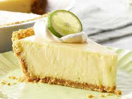

Key Lime Pie

Ingredients
- 5 egg yolks, beaten
- 1 (14 oz) can of sweetened condensed milk
- 1/2 cup of key lime juice
- 1 (9 in) prepared graham cracker crust
Steps
- Gather all of the ingredients and preheat the oven to 375°f (190°C).
- Combine the sweetened condensed milk, key lime juice, and egg yolks; mix well.
- Pour the mixture into the unbaked graham cracker crust
- Bake until the filling is set, around 15 minutes.
- Allow for it to cool fully and serve!